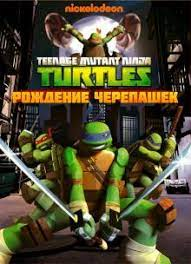

⚔Teenage Mutant Ninja Turtles

Описание мультфилма
«Черепашки-ниндзя» (англ. Teenage Mutant Ninja Turtles, сокр. TMNT, в Европе — Teenage Mutant Hero Turtles, сокр. TMHT) — американская медиафраншиза, созданная авторами комиксов Кевином Истменом и Питером Лэрдом. Она повествует о четырёх антропоморфных братьях-черепахах — Леонардо, Донателло, Микеланджело и Рафаэле — обучившихся ниндзюцу и борющихся со злом в их родном городе Нью-Йорке. В ходе многочисленных приключениях их сопровождают мутировавшая крыса-учитель по имени Сплинтер и друзья-люди в лице Эйприл О’Нил и Кейси Джонса. Неизменными врагами Черепашек являются Бакстер Стокман и Крэнг, а заклятым врагом выступает Шреддер.
Первым элементом франшизы стал комикс Teenage Mutant Ninja Turtles, изначально задуманный Кевином Истменом и Питером Лэрдом в качестве пародии на популярные комиксы о супергероях. Первый выпуск был выпущен в мае 1984 года компанией Истина и Лэрда под названием Mirage Studios и имел неожиданный успех. В 1987 году Истмен и Лэрд заключили соглашение с Playmates Toys о выпуске линейки фигурок Черепашек-ниндзя. В период с 1988 по 1992 год было продано множество тематических товаров на сумму в 1,1 миллиарда $ США, что сделало линейку 3-й самой продаваемой серией игрушек на тот момент.
Продвижению фигурок способствовал мультсериал, премьера которого состоялась в 1987 году, после чего он выходил в эфир практически десять лет. В некоторых европейских регионах слово «ниндзя» в названии было заменено на «герой» из-за цензуры. Было выпущено три игровых фильма: первый фильм стал самым кассовым независимым фильмом 1990 года. В 2009 году франшиза была приобретена Viacom, в настоящее время известной как Paramount Global. Viacom заказала новую серию комиксов, два новых игровых фильма и новый мультсериал.
более подробная информация на этом сайте
Персонажи
- Леонардо
- Рафаэль
- Микеланджело
- Донателло
- Ирма Лангинштейн
- Бибоп
- Рокстеди
- Эйприл О’Нил
- Крэнг
- Шреддер
- Хамато Сплинтер